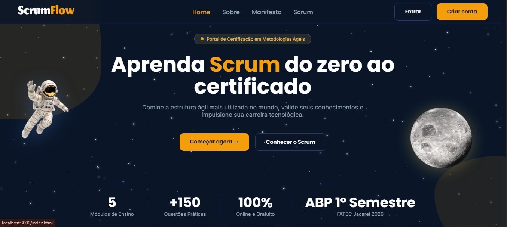
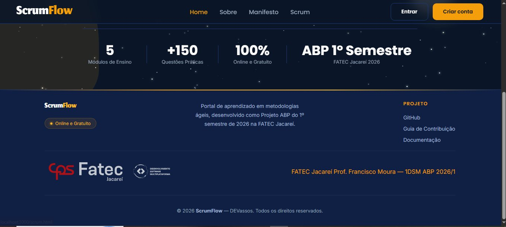
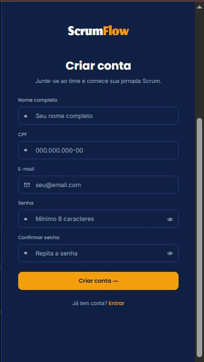
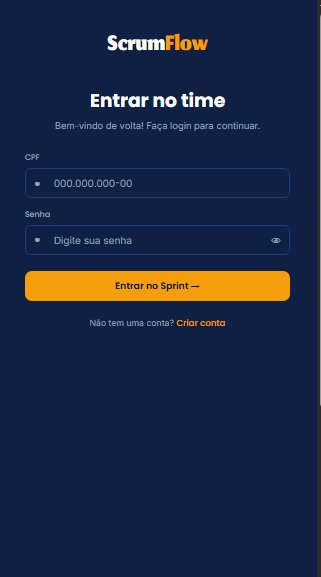
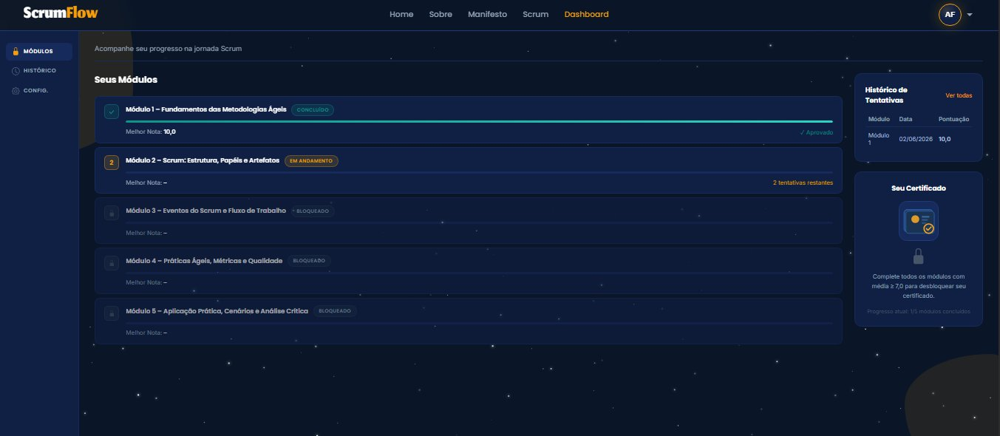
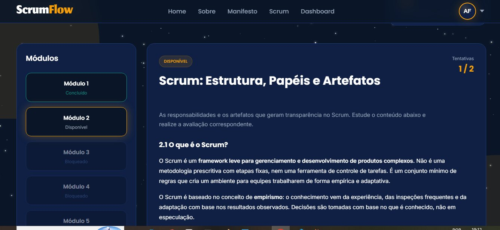
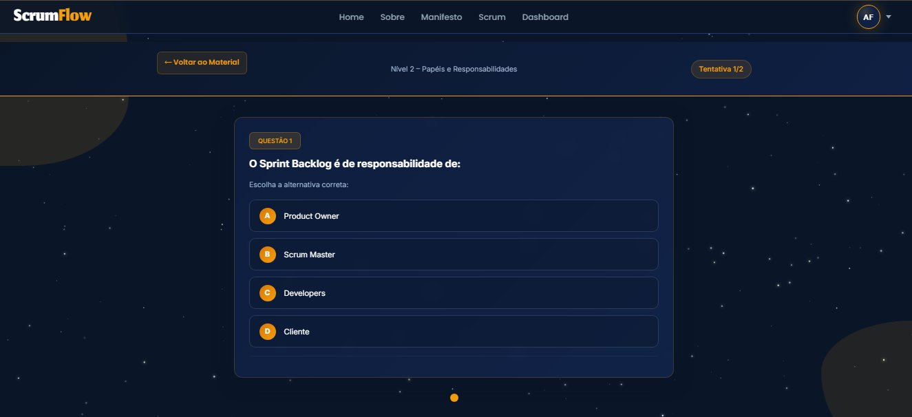
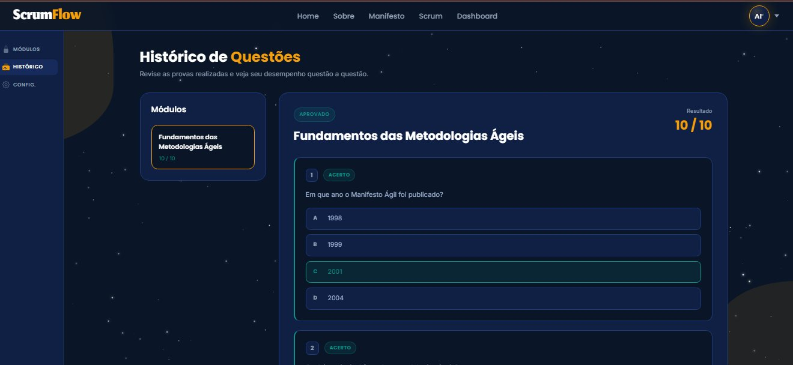

Sobre o ScrumFlow
O ScrumFlow é um portal gratuito para você aprender e certificar seus conhecimentos em metodologias ágeis, com foco em Scrum.
A ideia é simples: você avança por 5 módulos, do básico ao avançado. Em cada módulo você faz uma avaliação com questões práticas e, conforme vai concluindo os módulos com bom desempenho, libera o próximo. Ao terminar todos eles com a média necessária, você desbloqueia um certificado digital com suas notas.
Este manual acompanha o caminho do começo ao fim: criar conta → entrar → estudar os módulos → fazer as avaliações → acompanhar o progresso → emitir o certificado. Use o índice ao lado para pular direto para o que precisar.
O ScrumFlow é 100% online e gratuito. Você só precisa de um navegador (no computador ou no celular) e de uma conta — que você cria em menos de um minuto.
A página inicial
Ao acessar o ScrumFlow, você chega à página inicial. No topo ficam o menu de navegação (Home, Sobre, Manifesto, Scrum) e, no canto direito, os botões Entrar e Criar conta.

No centro, o botão Começar agora → leva você direto para a criação de conta, e Conhecer o Scrum abre o conteúdo introdutório sobre a metodologia. Mais abaixo, alguns números resumem o portal:
- 5 módulos de ensino, do básico ao avançado;
- +150 questões práticas no banco de questões;
- 100% online e gratuito.
No rodapé você encontra links úteis do projeto — GitHub, Guia de Contribuição e Documentação — além dos créditos da FATEC Jacareí e da equipe DEVassos.

As páginas Sobre (o projeto e a equipe), Manifesto (os 12 princípios do Manifesto Ágil) e Scrum (uma introdução ao “fluxo” do Scrum) trazem conteúdo de apoio. Vale a leitura antes das avaliações — ajuda bastante nas questões.
Criar sua conta
Para usar o portal e guardar seu progresso, o primeiro passo é criar uma conta. Clique em Criar conta (no topo) ou em Começar agora (na página inicial). O formulário abre como um painel que desliza pela lateral della tela.

Preencha os campos do formulário:
- Nome completo — seu nome, que aparecerá no certificado.
- CPF — no formato
000.000.000-00. Ele é o seu identificador de acesso (você fará login com o CPF, e não com o e-mail). - E-mail — um endereço válido, no formato
seu@email.com. - Senha — com no mínimo 8 caracteres. Toque no ícone de olho para conferir o que digitou.
- Confirmar senha — repita a mesma senha para evitar erros de digitação.
- Clique em Criar conta → para finalizar.
Cada CPF só pode ter uma conta no portal. Anote a senha em um lugar seguro — você vai precisar dela junto com o CPF toda vez que entrar.
Já tem conta? Use o link “Já tem conta? Entrar” no fim do formulário para ir direto ao login.
Entrar no portal
Com a conta criada, clique em Entrar no topo da página para acessar.

- Digite seu CPF no formato
000.000.000-00. - Digite sua senha (use o ícone de olho se quiser conferir).
- Clique em Entrar no Sprint →.
Pronto! Você será levado ao seu painel (Dashboard), onde acompanha tudo. Não tem conta ainda? O link “Não tem uma conta? Criar conta” leva você de volta ao cadastro.
Lembre-se: o login é feito com o CPF, não com o e-mail.
Seu painel (Dashboard)
O Dashboard é a sua central. É aqui que você vê todos os módulos, acompanha o progresso, consulta o histórico e acessa o certificado.

No menu lateral esquerdo há três áreas: Módulos (esta tela), Histórico (todas as suas tentativas) e Config. (sua conta). No centro fica a lista “Seus Módulos”.
Os 5 módulos
Fundamentos das Metodologias Ágeis
O ponto de partida — conceitos essenciais do ágil.
Scrum: Estrutura, Papéis e Artefatos
Como o Scrum se organiza: papéis e artefatos.
Eventos do Scrum e Fluxo de Trabalho
As cerimônias e o ciclo de trabalho na prática.
Práticas Ágeis, Métricas e Qualidade
Indicadores, qualidade e boas práticas.
Aplicação Prática, Cenários e Análise Crítica
O nível avançado: aplicar tudo em cenários reais.
Como ler o status de cada módulo
Cada módulo mostra um selo de situação, sua melhor nota e quantas tentativas ainda restam:
- Concluído — você já finalizou o módulo. A barra fica completa e aparece a sua melhor nota (ex.: “Melhor Nota: 10,0 — ✓ Aprovado”).
- Em andamento — é o módulo que está liberado para você fazer agora.
- Bloqueado — ainda não disponível. Os módulos abrem em sequência: você precisa avançar no atual para liberar o próximo.
Comece sempre pelo módulo marcado como Em andamento. Conforme você o conclui, o próximo módulo é desbloqueado automaticamente.
Como funcionam as avaliações
Cada módulo tem uma avaliação. Antes de começar, vale entender as regras — elas valem para todos os módulos:
| Regra | Como funciona |
|---|---|
| Questões por avaliação | 10 questões, sorteadas de um banco maior — a cada tentativa, o conjunto pode mudar. |
| Dificuldade | Sempre 3 fáceis, 4 médias e 3 difíceis. |
| Tentativas | Até 2 tentativas por módulo. |
| Nota que vale | A maior nota entre as suas tentativas é a que conta. |
Você tem duas tentativas por módulo. Use-as com calma: como vale a maior nota, a segunda tentativa serve para melhorar o resultado, mas não há uma terceira chance.
Fazendo uma avaliação
No Dashboard, clique no módulo liberado para abri-lo. Você entra na página do módulo, onde estuda o conteúdo e acessa a avaliação.

Nessa tela você encontra:
- à esquerda, a lista de módulos — clique para navegar entre eles (os marcados como Bloqueado não abrem);
- no topo, o selo de status (Disponível) e o contador de Tentativas (ex.: 1 / 2), que mostra quantas você já usou;
- no centro, o conteúdo de estudo do módulo — leia com calma antes de avaliar;
- ao final do conteúdo, os botões “Iniciar módulo” (que abre a avaliação) e “Ver progresso”.
O status “Disponível” (na página do módulo) é o mesmo que “Em andamento” (no Dashboard): significa que o módulo está liberado para você fazer agora.
Estude o conteúdo da página antes de iniciar a avaliação. Como as questões são sorteadas, dominar o tema vale mais do que tentar adivinhar.
Passo a passo da avaliação
Depois de estudar o conteúdo, role a página até o acesso à avaliação. O caminho geral é este:
- No módulo liberado, clique para iniciar a avaliação.
- A cada questão, leia o enunciado e escolha uma alternativa (A, B, C ou D).
- Avance pelas questões até responder todas as 10 (os pontinhos no rodapé indicam em qual você está).
- Ao terminar, finalize a avaliação para registrar suas respostas.
- Veja sua nota na tela de resultado.
- Se quiser, use a 2ª tentativa para tentar uma nota melhor (vale a maior).
As questões aparecem uma de cada vez. No topo da tela ficam o botão “← Voltar ao Material” (que retorna ao conteúdo de estudo), o nome do tópico no centro e o contador “Tentativa 1/2” no canto.

Assim que você finaliza, o portal abre a tela de resultado, que traz:
- sua nota em destaque, dentro de um círculo de pontuação;
- um selo de Aprovado ou Reprovado para aquela tentativa;
- uma revisão questão a questão: cada questão fica marcada como acerto (verde) ou erro (vermelho), mostrando inclusive a resposta correta;
- botões de ação para voltar ou seguir adiante.
Ao concluir um módulo, o portal exibe uma breve animação de comemoração antes de liberar o próximo. 🎉 E você pode rever essas questões quando quiser, depois, na aba Histórico.
Como as questões são sorteadas, na 2ª tentativa você pode receber um conjunto diferente. Por isso, estudar o conteúdo do módulo é o melhor caminho — não dá para “decorar” as questões.
Notas e aprovação
As notas no ScrumFlow seguem a escala de 0 a 10 (ex.: 10,0). Veja como elas se combinam:
- Nota do módulo — é a maior nota entre as tentativas que você fez naquele módulo.
- Conclusão do módulo — um módulo só é considerado concluído depois que você é aprovado na avaliação dele. Ao concluir, o próximo módulo é liberado.
- Média final — é a média das notas finais de todos os módulos concluídos.
- Certificado — fica disponível quando você conclui todos os 5 módulos com média ≥ 7,0.
Para liberar o certificado, sua média final precisa ser igual ou maior que 7,0. Por isso, vale usar a 2ª tentativa nos módulos em que a nota ficou mais baixa, para puxar a média para cima.
Progresso e histórico
O ScrumFlow registra tudo o que você faz, então é fácil saber onde você está. Há dois lugares para acompanhar:
No Dashboard — resumo rápido
À direita do Dashboard, o quadro “Histórico de Tentativas” lista as últimas avaliações com módulo, data e pontuação. O bloco “Seu Certificado”, logo abaixo, mostra o quanto falta — por exemplo, “Progresso atual: 1/5 módulos concluídos”.
Na aba Histórico — revisão completa
Clicando em “Ver todas” ou em Histórico no menu lateral, você abre a página “Histórico de Questões”, onde revê cada prova questão a questão. Nela você tem:
- à esquerda, a lista de módulos já avaliados (cada um marcado como aprovado ou reprovado, com sua nota);
- à direita, todas as questões daquela avaliação, mostrando a alternativa que você escolheu e qual era a correta;
- marcação por cor: verde para acertos e vermelho para erros.

O histórico é ótimo para estudar antes da 2ª tentativa: revise as questões que você errou e confira as respostas corretas.
Seu certificado
O certificado é o objetivo final da sua jornada. Ele aparece bloqueado no Dashboard até você cumprir os requisitos:
- Concluir os 5 módulos.
- Atingir média final ≥ 7,0.
- Com isso, o bloco “Seu Certificado” é desbloqueado e você pode emitir o documento.
O certificado é digital e personalizado. Ele traz:
- seu nome e CPF;
- o texto de conclusão com o período do curso;
- sua média final e uma tabela com a nota de cada módulo;
- um código de verificação único, que comprova a autenticidade;
- a data de emissão e as assinaturas institucionais.
Na tela do certificado há os botões “Imprimir / Exportar PDF” (para salvar uma cópia) e “Voltar ao Dashboard”. Veja abaixo um modelo de como ele se parece:
Seu Nome Completo
CPF: 000.000.000-00
concluiu com êxito todos os módulos do curso ScrumFlow, trilha de aprendizagem em metodologia ágil Scrum, no período de 13/04/2026 a 11/06/2026.
8,6
| Módulo | Nota |
|---|---|
| 1 — Fundamentos das Metodologias Ágeis | 10,0 |
| 2 — Scrum: Estrutura, Papéis e Artefatos | 8,0 |
| 3 — Eventos do Scrum e Fluxo de Trabalho | 9,0 |
| 4 — Práticas Ágeis, Métricas e Qualidade | 8,0 |
| 5 — Aplicação Prática e Análise Crítica | 8,0 |
a1b2c3d4-5e6f-7890-abcd-ef1234567890Emitido em 11/06/2026
Autenticidade: todo certificado traz um Código de Verificação único, vinculado às suas notas. É ele que comprova que o documento é verdadeiro — um print ou imagem alterada não passa na conferência por esse código.
Enquanto não atingir os requisitos, o bloco do certificado fica bloqueado e mostra a mensagem de progresso (ex.: “Complete todos os módulos com média ≥ 7,0 para desbloquear seu certificado”) — então é só seguir avançando nos módulos.
Conta e configurações
No topo direito, quando você está logado, aparece uma saudação com o seu nome (e um avatar com suas iniciais) ao lado do botão Sair, usado para encerrar a sessão.
No menu lateral, a aba Config. reúne os ajustes da sua conta, em dois cartões:
- Dados Pessoais — atualize seu nome, e-mail e CPF e clique em “Salvar alterações”.
- Segurança — defina uma nova senha (mínimo 8 caracteres), confirme e clique em “Alterar senha”.
Se a sua conta tiver perfil de administrador, a página de Configurações exibe uma área extra de Administração (gerenciar questões, módulos e o progresso dos alunos). Para o uso comum, basta os cartões de Dados Pessoais e Segurança.
Ao usar um computador compartilhado, lembre-se de sair da conta (botão Sair) ao terminar.
Perguntas frequentes
Como troco a minha senha?
Estando logado, vá em Config. (menu lateral) e use o cartão Segurança para definir uma nova senha. Se você não conseguir entrar na conta, procure a equipe responsável pelo portal.
Posso fazer um módulo mais avançado antes dos anteriores?
Não. Os módulos abrem em sequência: é preciso avançar no módulo atual para liberar o próximo. Os que ainda não estão disponíveis aparecem como Bloqueado.
Quantas vezes posso refazer uma avaliação?
Até 2 tentativas por módulo. Vale a maior nota entre elas. Não há uma terceira tentativa.
As questões são sempre as mesmas?
Não. Elas são sorteadas a partir de um banco de questões, sempre com a mesma proporção de dificuldade (3 fáceis, 4 médias, 3 difíceis). A cada tentativa o conjunto pode mudar.
Qual nota preciso para tirar o certificado?
É necessário concluir os 5 módulos com média final igual ou maior que 7,0.
Consigo usar o ScrumFlow pelo celular?
Sim. O portal é feito para funcionar bem em celular, tablet e computador — basta um navegador.
Faço login com CPF ou e-mail?
Com o CPF e a senha. O e-mail é usado no cadastro e no certificado, mas o acesso é pelo CPF.